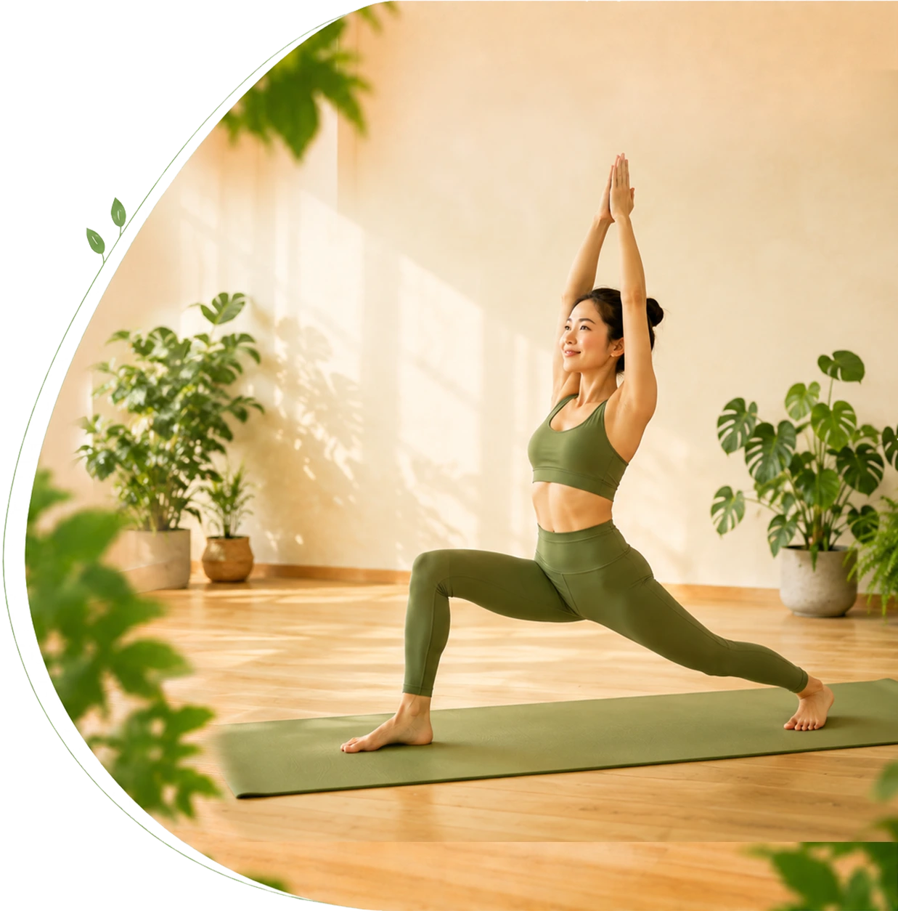

Hatha Yoga dành cho mọi người
Khám phá sức mạnh
Hatha Yoga
cùng Mây Yoga
Hành trình chuyển hoá cơ thể và tâm trí bắt đầu từ đây. Học tư thế chuẩn, hơi thở đúng và hiểu sâu về Yoga cùng đội ngũ giáo viên giàu kinh nghiệm.

Hatha Yoga
Tư thế dành cho tất cả
Tư thế chuẩn
Căn chỉnh an toàn
Hơi thở đúng
Thực hành có nền tảng
Hiểu cơ thể
An toàn & bền vững
Học đúng từ nền tảng
Tư thế • Hơi thở • Hiểu cơ thể